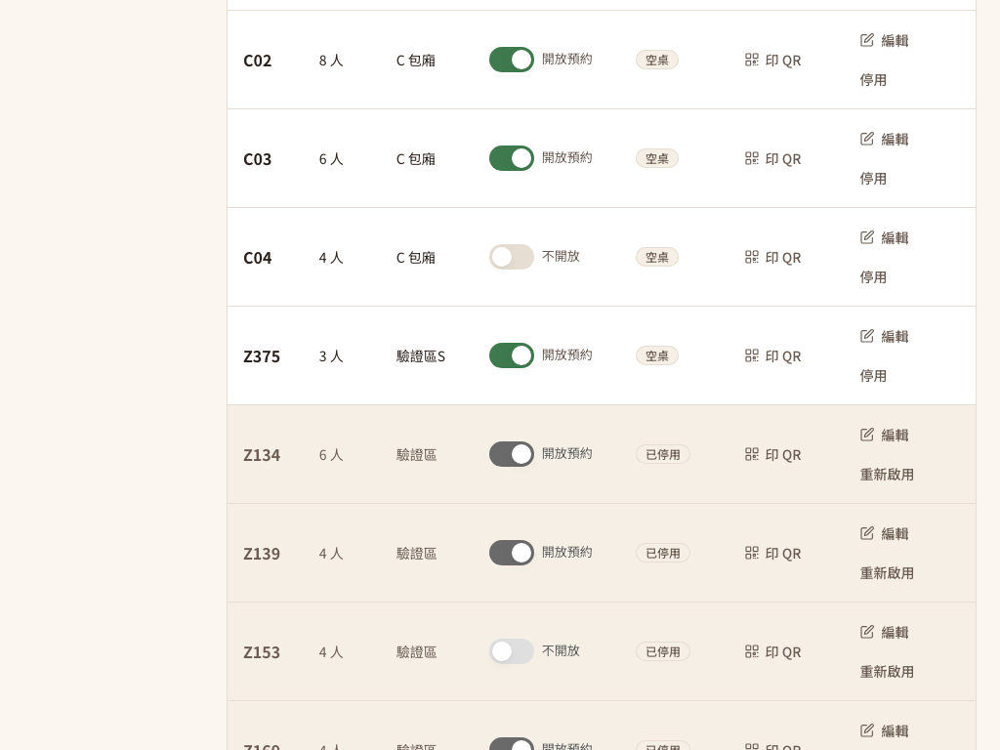

兩個錯誤、一個基本功能、一套統一的錯誤格式
- 錯誤 1：桌號可以隨意改，但桌上已經印好的 QR code 會跟著失效。
- 錯誤 2：座位數可以改到比今晚的訂位、或正在用餐的人數還少。
- 補上的基本功能：M2 規格 2.1 的「啟用狀態」原本無法管理，這次加上停用與重新啟用。
- 錯誤格式：座位設定的錯誤改用專案統一的格式（有錯誤碼），畫面能清楚說明原因。
錯誤 1、2 是原本審查確認的問題；啟用與停用是規格裡有、但還沒接好的基本功能，這次直接補上，屬於整合成果。
店長只是想把桌子調整一下
下午空檔，店長打開座位管理，想做兩件事：
把 A05 從 8 人桌改成 4 人桌，因為要把兩張椅子搬去別桌。但今晚 19:30 有一組 6 位客人的訂位，系統已經把 A05 配給他們。
覺得「A03」不好看，想改成「A3」。可是 A03 桌上已經貼著印好的 QR code，內容是
…/order/checkin/A03。
原本兩件事都會成功，而且畫面沒有任何警告。問題要到晚上才會爆發。
設定改了，但「已經存在的東西」沒有跟著被檢查
A05 變成 4 人桌，那筆 6 人訂位還是有效、而且仍然保留 A05。19:30 客人到店，櫃檯按報到開桌時，開桌的容量檢查會說「6 位坐不下 4 人桌」而拒絕。客人有訂位卻沒有桌。
A03 改成 A3 之後，客人掃桌上的 QR，打開的是 /order/checkin/A03，系統已經找不到 A03 這張桌，掃碼點餐整個失效。M2 規格的設計原則是：「QR 內容固定，貼上去永不換」。
兩個問題的共同點：修改的程式只檢查「新的值本身合不合理」（座位數 1～20、桌號不重複），卻沒有檢查「改了之後，已經存在的訂位、用餐、QR 還成不成立」。
另外還有兩個小問題：錯誤用 ResponseStatusException 丟出，回應裡沒有錯誤碼，前端只能顯示籠統的失敗；而且列表 API 只回傳啟用中的桌，停用的桌在畫面上直接消失，也沒有辦法重新啟用。
改設定前，先問「這張桌現在被誰用著」
1. 桌號建立後不能修改
桌號就是 QR code 的內容，所以把它當成這張桌的「身分證字號」：建立時決定，之後不能改。編輯時如果送來不同的桌號（先去掉空白、轉大寫再比），後端回 409 TABLE_NO_IMMUTABLE，訊息說明「桌號印在桌上的 QR code 裡，建立後不能修改；要換號請停用這張桌再新增」。畫面的編輯對話框也把桌號欄改成唯讀，旁邊寫出原因。
也可以設計成「保留舊號當別名」或「改號後強制重印 QR」，但這些都需要額外的資料表與流程。規格已經寫明 QR 永不換，最簡單、最不會出錯的做法就是桌號不能改。
2. 改小座位數時，在桌位鎖裡檢查訂位與用餐
只有「座位數變少」時才需要檢查。後端先用 SELECT ... FOR UPDATE 鎖住這張桌，再查兩件事：
- 這張桌正在用餐的人數（成人＋兒童）。
- 指派到這張桌、狀態是已確認、而且還沒結束的訂位人數。已取消或已經過去的訂位不算。
新的座位數比其中任何一個少，就回 409 SEATS_BELOW_BOOKINGS，訊息帶出衝突的那筆，例如「10/23 19:30 有 6 位訂位在這張桌，座位數不能少於 6」。如果後面還有人數更多的訂位，也會一起提醒，避免店長改一次又被擋一次。
3. 為什麼一定要「鎖住再檢查」？
想像兩件事同時發生：店長按下「改成 8 人」，同一秒有一位客人在網路上訂了 10 人位，而系統裡只有這張 12 人桌坐得下。
店長的請求查到「沒有超過 8 人的訂位」→ 準備存檔；同時訂位請求看到「12 人桌坐得下」→ 把桌配給 10 人。兩邊都成功：一筆 10 人訂位配到一張 8 人桌。
建立訂位時本來就會用 FOR UPDATE 鎖住候選的桌。座位設定也鎖同一張桌，兩個請求就會排隊：誰先拿到鎖誰先做，後來的那個拿到鎖後讀到的是最新資料。結果不是「訂位成功、改座位被擋」，就是「改座位成功、這張桌已經坐不下 10 人」。
交易使用 READ_COMMITTED（讀取已提交資料）隔離層級：排隊等到鎖之後，查訂位時看得到對方剛提交的那筆。開桌、預約報到、候位入座也都是鎖同一張桌再檢查容量，所以這幾條路徑之間也不會產生「5 個人坐在 4 人桌」的結果。
4. 錯誤格式統一
座位設定的所有錯誤改用專案共用的 ApiException：資料不合規則是 400 VALIDATION_FAILED、找不到是 404 NOT_FOUND、桌號重複是 409 TABLE_NO_TAKEN，加上上面三個新的 409。兩位店長同時新增同一個桌號時，資料庫的唯一索引會擋下第二筆，也會轉成 TABLE_NO_TAKEN，而不是 500（實測同時送 3 輪，都是一個 200、一個 409）。桌號和區域也加上長度檢查（最多 10 字與 20 字，跟資料表欄位一致），太長回 400 而不是資料庫錯誤。
5. 審查找到的另一個問題：「可否預約」開關會蓋掉別人剛存的資料
獨立程式審查發現，原本的「可否預約」開關是先用一般查詢讀出整張桌，改一個欄位再存檔。專案用的 Hibernate 存檔時預設會把整列所有欄位都寫回去，包括讀進來時的舊值。於是會發生：
店長 A 按「停用」：鎖住桌、檢查、把
active改成 0，準備存檔。同一時間店長 B（或同一個人手快）切換「可否預約」：讀到的還是
active=1。A 存檔成功，回應「停用成功」。接著 B 存檔，把整列寫回，
active又變回 1。
兩個請求都回 200，畫面也都說成功，但桌子其實沒有被停用。這種錯誤叫做遺失更新（lost update）：後寫的人拿著舊資料覆蓋了先寫的人。這次在修正前實際跑出來了（兩個都回 200，資料庫的 active 卻是 1）。同樣的機制也可能把剛開桌的「用餐中」寫回「空桌」，這是原本的程式就有的風險。
修法只有一行：「可否預約」也先用同一把桌位鎖讀資料，跟停用、改座位數、開桌排隊。修正後同樣的同時操作跑 3 輪，停用都保留、開桌後也都維持「用餐中」。畫面上，停用送出中也會把同一列的開關鎖住。
主要程式檔案
backend/src/main/java/tw/ispan/smartorder/service/SeatService.java：桌號不可改、改小座位數的檢查、啟用與停用、統一錯誤。backend/src/main/java/tw/ispan/smartorder/repository/DiningTableRepository.java：包含停用桌的鎖定查詢、全部桌的排序查詢。backend/src/main/java/tw/ispan/smartorder/controller/SeatController.java、dto/SeatActiveRequest.java、dto/SeatResponse.java：新增啟用／停用 API 與active欄位。frontend/src/features/admin/table/SeatManagement.jsx、SeatFormDialog.jsx、frontend/src/services/api/table/seatApi.ts：停用列、busy 狀態、唯讀桌號、錯誤顯示。frontend/src/features/admin/reservation/ReservationManagement.tsx：可預約比例只算啟用中的桌。
停用一張桌：只有「現在沒人用、之後也沒人訂」才可以
M2 規格 2.1 的桌位主檔包含「啟用狀態」，例如某張桌壞了要維修，就先停用。新增 PATCH /api/admin/tables-config/{id}/active，送 {"active": false} 停用、{"active": true} 重新啟用。
- 停用前檢查（同樣在桌位鎖裡）：桌子必須是空桌、沒有未結束的用餐、沒有還沒結束的已確認訂位；否則回
409 TABLE_IN_USE，並說明是哪一個原因（用餐中、還沒清潔完、10/24 18:00 還有 4 位的訂位…）。 - 重新啟用：沒有條件，按了就恢復。
- 停用後：桌況總覽、開桌、選桌清單、線上訂位挑桌都看不到這張桌（這些查詢原本就各自只找啟用中的桌，這次逐一確認過）；座位管理仍然列出它，灰色顯示「已停用」，可以編輯或重新啟用。
- 畫面：停用送出中按鈕顯示「處理中…」，其他停用鈕也先鎖住，避免連點；失敗時把後端的原因顯示在表格上方。上方統計只算啟用中的桌，並註明「另有 N 桌停用」；預約管理頁的「可預約比例」也只算啟用中的桌。
- 1024 像素寬：表格在店家端最小寬度下原本會把「開放預約」「空桌」擠成直排；這次讓這些短字不換行，並在 1280 像素以下收起 QR 網址欄（表格下方仍有說明），只留「印 QR」按鈕。
你可以照著做一次
權限。不登入讀座位設定回
401；COUNTER 可以讀，但新增、編輯、停用都回403；MANAGER 都可以。驗證與桌號。新增空白桌號、0 或 21 個座位、空白區域都回
400；重複桌號回409 TABLE_NO_TAKEN。編輯時改成別的桌號回409 TABLE_NO_IMMUTABLE，資料庫的桌號不變；同一個桌號只是大小寫或空白不同，其他欄位照樣能存，QR 圖片照常產生。座位數與訂位。替測試桌加一筆 3 天後 5 位的已確認訂位，另加一筆已取消、一筆昨天的訂位。把座位數改成 4 →
409 SEATS_BELOW_BOOKINGS；改成 5 → 成功（已取消、過去的不算）。取消那筆訂位後，改成 2 也成功。座位數與用餐中。讓測試桌開桌 4 位，改成 3 →
409；此時停用也回409 TABLE_IN_USE。停用與重新啟用。有未來訂位、待清理時停用都被擋；空桌停用成功後，桌況總覽與選桌清單看不到它、開桌被拒、但仍能編輯；重新啟用後回到桌況總覽。
同時操作（各 3 輪）。「停用」和「開桌」同時送；「改成 4 人」和「開 5 人桌」同時送；「改成 8 人」和「10 人線上訂位」同時送。每一輪都只有一邊成功，而且資料庫最後的座位數、用餐、訂位彼此一致。另外「可否預約」和「停用」、「可否預約」和「開桌」同時送，兩邊都成功時資料都要保留（修正前停用會被蓋掉）；兩位店長同時新增同一個桌號，只會有一個成功。
畫面（1024 像素寬）。停用時看到「處理中…」與鎖住的其他按鈕；停用正在用餐的桌，表格上方出現「A01 停用失敗：這張桌正在用餐中…」；編輯時桌號唯讀；改小座位數被擋時對話框不關，顯示原因；預約管理頁的比例與 API 算出的一致。
提交與驗證紀錄
程式版本：Git commit a5fac00。
HTTP 與資料庫檢查
座位設定專項 83 項全部通過，包含 6 組同時操作各 3 輪；另重跑 36 項既有基線也全部通過。紀錄裡另附修正前那一次的失敗結果（停用被「可否預約」蓋掉）。查看完整 HTTP 紀錄。
瀏覽器操作檢查
座位管理與預約管理頁 11 項全部通過，含 busy 狀態、錯誤原因顯示、唯讀桌號與 1024 像素版面。查看完整瀏覽器紀錄。


測試在隔離的 MySQL 5.7 容器進行，測試桌使用「驗證區」區域與 Z 開頭的桌號，結束後停用。最終驗證是在包含提醒功能的同一份程式上重跑。獨立高風險審查找到 1 個 P2（上面第 5 點的遺失更新），已實際重現並修正；其餘鎖的推論、隔離層級、時間基準、唯一鍵處理與權限都確認沒有問題。
前輩回饋、報告與履歷
技術前輩的建議
寫「編輯」功能時，除了檢查新值本身，還要問：「有誰正在依賴舊值？」桌號被 QR 依賴、座位數被訂位和用餐依賴。把這些依賴列出來，就知道哪些欄位不能改、哪些改了要先檢查。
「先查再改」只要中間可能有別人插隊，就要鎖。這次的關鍵是和其他程式鎖同一筆資料：訂位、開桌都鎖桌位這一列，座位設定也鎖它，大家就自然排隊，不需要另外發明機制。
這個功能用到的技術
- 資料完整性設計：不可變欄位（immutable）、軟刪除（啟用旗標）
- MySQL
SELECT ... FOR UPDATE資料列鎖、READ_COMMITTED隔離層級 - 跨模組一致性：座位設定、訂位、開桌、候位入座共用同一把桌位鎖
- 唯一索引衝突轉成業務錯誤碼（
saveAndFlush） - 統一錯誤格式
ApiException與前端錯誤顯示 - 併發 HTTP 測試（同時送出、交替先後順序）與 Playwright 瀏覽器測試
專題報告與履歷可以這樣寫
報告：用「下午改小座位數、晚上訂位客人沒桌」的故事開場，再展示被擋下時的錯誤訊息；接著畫出「改座位數」和「線上訂位」同時發生的時間線，說明為什麼兩邊要鎖同一張桌。最後 demo 停用與重新啟用。
履歷：「參與餐廳座位管理後台開發，設計桌號不可變更以保護桌上 QR code，並以資料列鎖確保座位數調整、線上訂位與開桌之間的資料一致；補上桌位啟用／停用管理與統一錯誤格式。」請寫「參與」，不寫成獨立完成整個桌位模組。
新手名詞表
- S-08
- UI（User Interface，使用者介面）規格裡的畫面編號，S-08 是店長用的座位管理頁。
- QR（Quick Response，快速反應碼）
- 手機相機可以快速讀取的方形圖碼；本案每張桌貼一張，內容是該桌的報到網址，網址裡有桌號。
- 不可變欄位（immutable）
- 建立後就不能再修改的資料，通常是被其他地方當作識別的值，例如桌號。
- 軟刪除（soft delete）與啟用旗標
- 不真的把資料刪掉，而是用一個欄位（例如
active）標記「停用」。歷史訂單、帳單還能找到這張桌。 - API（Application Programming Interface，應用程式介面）
- 前端呼叫後端功能的網址與規則，例如
PATCH /api/admin/tables-config/{id}/active。 - HTTP 狀態碼 400／401／403／404／409
- HTTP 是 Hypertext Transfer Protocol（超文字傳輸協定）。400 資料不合規則；401 沒有登入；403 角色沒有權限；404 找不到；409 跟目前資料狀態衝突。
- COUNTER／MANAGER
- 店員角色：COUNTER 是櫃檯，可以看座位設定；MANAGER 是店長，可以修改。
- 資料列鎖（row lock）與 FOR UPDATE
SELECT ... FOR UPDATE會鎖住讀到的那一筆資料到交易結束；其他也要鎖它的請求必須排隊。- 交易（transaction）
- 把一組資料庫操作當成一次完整的動作：全部成功才存檔，中間失敗就全部取消。
- READ_COMMITTED（讀取已提交資料）
- 資料庫隔離層級的一種：每次查詢都讀得到其他交易已經存檔的最新結果。
- 唯一索引（UNIQUE index）
- 資料庫規則：某個欄位的值不能重複，例如兩張桌不能同一個桌號。
- 遺失更新（lost update）
- 兩個人讀了同一筆資料、各自修改後存檔，後存的人用舊資料蓋掉先存的人的修改。加鎖讓兩人排隊，或只更新有改的欄位，都可以避免。
- Hibernate
- 專案用的 JPA（Java Persistence API，Java 持久化 API）實作，負責把 Java 物件存進資料庫；預設存檔時會把整列欄位一起寫回。
- 競態（race condition）
- 兩個操作同時進行、互相插隊，單獨看都對、合在一起卻寫錯資料的情況。
- busy（處理中）與防連點
- 請求送出後把按鈕停用並顯示「處理中…」，避免連按送出兩次。後端仍要靠鎖保護。
- JSON（JavaScript Object Notation，JavaScript 物件表示法）
- API 請求與回應使用的文字資料格式，例如
{"active": false}。 - SHA／Git commit
- SHA 是 Secure Hash Algorithm（安全雜湊演算法）；Git 用它幫每個版本（commit）產生識別碼。